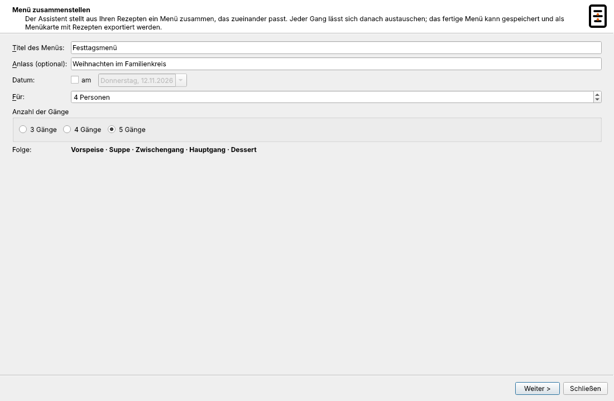
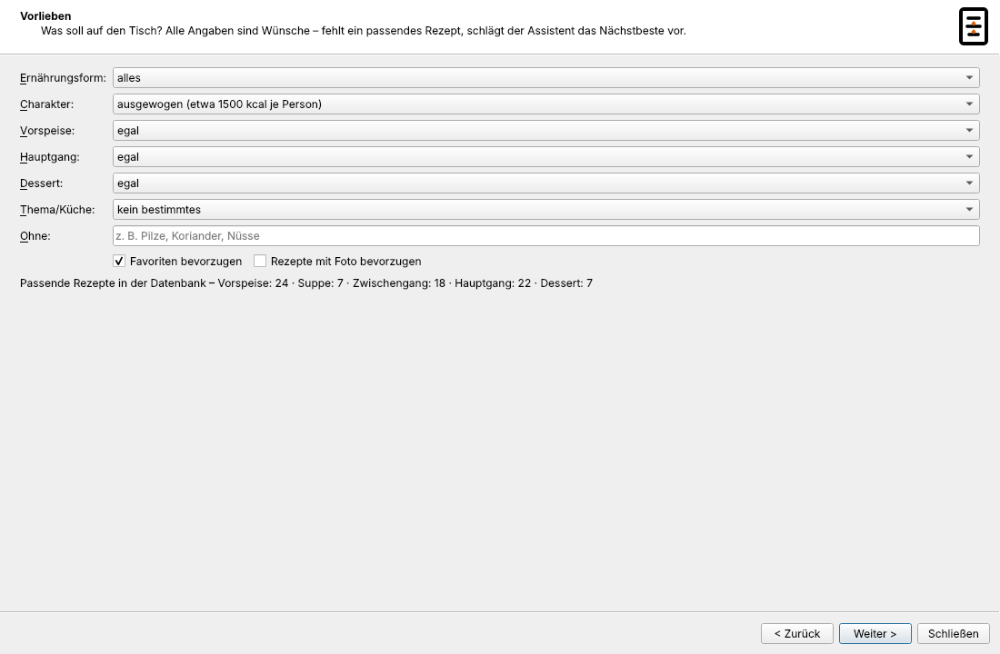
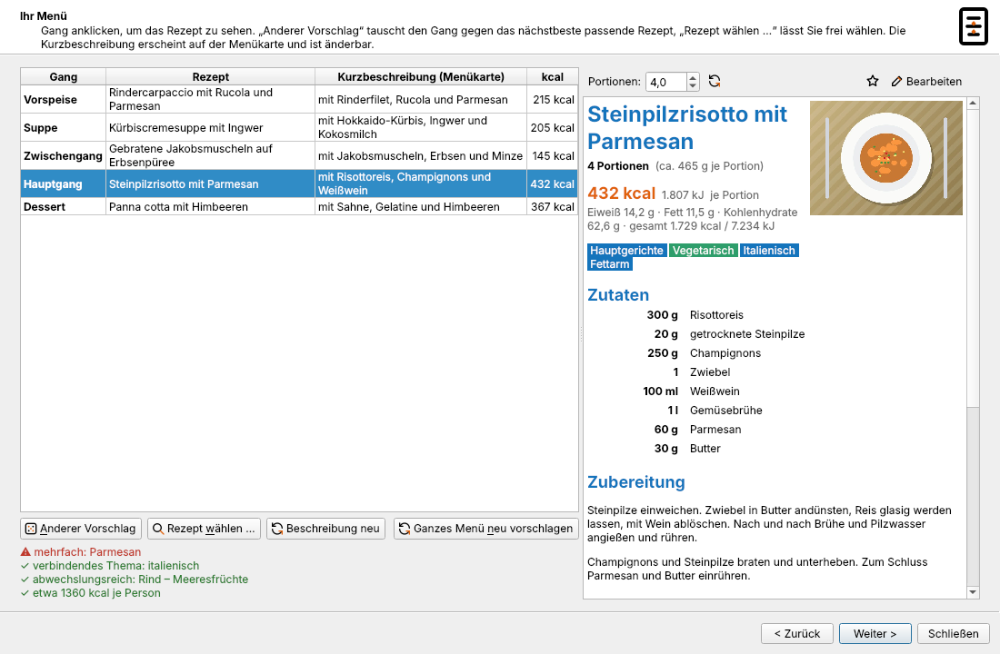
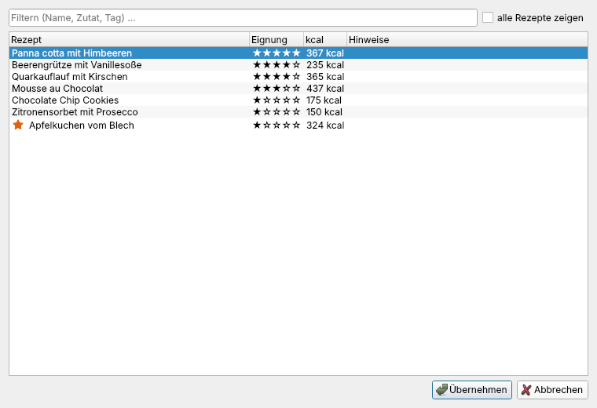
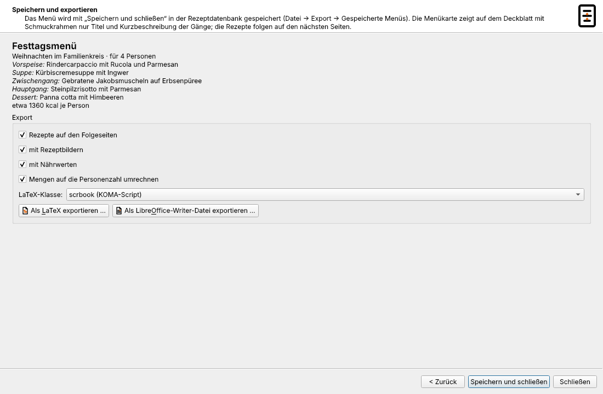
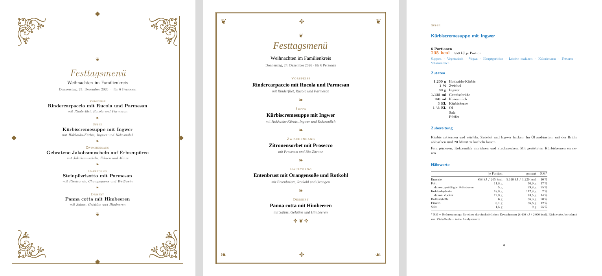
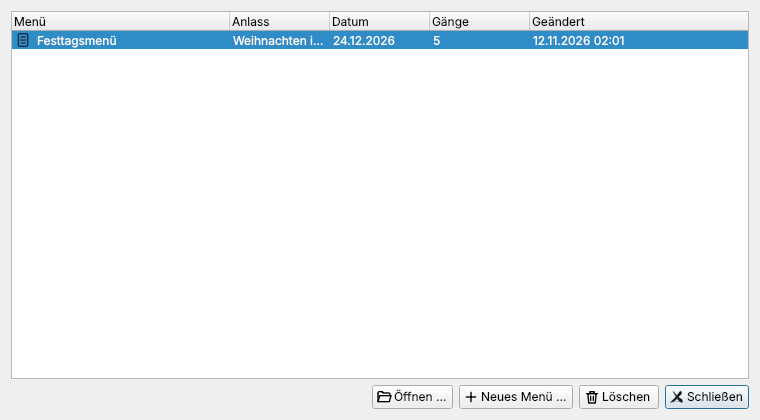

Der Menüassistent
Der Menüassistent stellt aus Ihren Rezepten ein Menü mit drei, vier oder fünf Gängen zusammen – für Weihnachten, einen Geburtstag oder ein Essen mit Gästen. Er fragt nach Ihren Vorlieben, schlägt eine stimmige Menüfolge vor und erstellt daraus eine Menükarte mit Schmuckrahmen; auf den Folgeseiten stehen die Rezepte, auf Wunsch gleich für die richtige Personenzahl umgerechnet.
Aufruf: Datei → Export → Menüassistent … (Strg+Umschalt+M) oder „Menü“ in der Werkzeugleiste.
Schritt 1: Rahmen

Titel (z. B. „Festtagsmenü“), Anlass (optional), Datum (optional), Personenzahl und die Zahl der Gänge:
| Gänge | Folge |
|---|---|
| 3 | Vorspeise · Hauptgang · Dessert |
| 4 | Vorspeise · Suppe · Hauptgang · Dessert |
| 5 | Vorspeise · Suppe · Zwischengang · Hauptgang · Dessert |
Schritt 2: Vorlieben

| Vorliebe | Auswahl |
|---|---|
| Ernährungsform | alles, vegetarisch, vegan |
| Charakter | leicht, ausgewogen, festlich-üppig – jeweils mit Richtwert in kcal je Person |
| Vorspeise | egal, Salat, kalt (Carpaccio, Tatar, Antipasti …), warm, Fisch oder Meeresfrüchte |
| Hauptgang | egal, Rind oder Kalb, Schwein, Geflügel, Lamm oder Wild, Fisch oder Meeresfrüchte, vegetarisch |
| Dessert | egal, fruchtig, mit Schokolade, cremig, Eis/Parfait/Sorbet, Gebäck/Kuchen/Strudel |
| Thema/Küche | ein Tag Ihrer Datenbank, z. B. „italienisch“ – passende Rezepte werden bevorzugt |
| Ohne | Zutaten, die nicht vorkommen sollen, durch Komma getrennt |
| Favoriten bevorzugen, Rezepte mit Foto bevorzugen |
Unter den Vorlieben steht, wie viele Rezepte je Gang passen. Gibt es für einen Gang kaum Auswahl, können Sie die Vorlieben lockern oder Festliche Beispielrezepte übernehmen – 16 Rezepte für Vorspeisen, Suppen, Zwischengänge, Hauptgänge und Desserts.
Schritt 3: Ihr Menü

Der Assistent zeigt seinen Vorschlag mit Hinweisen zur Harmonie, z. B. „✓ abwechslungsreich: Rind – Meeresfrüchte – Geflügel“ oder „⚠ Sahne in zwei Gängen“. Ein Klick auf einen Gang zeigt das Rezept rechts.
Anderer Vorschlag tauscht den gewählten Gang gegen das nächstbeste passende Rezept.
Rezept wählen … (oder Doppelklick auf den Rezeptnamen) zeigt alle passenden Rezepte, nach Eignung mit Sternen bewertet und mit Hinweisen. „alle Rezepte zeigen“ erlaubt auch eine ungewöhnliche Wahl.

Die Kurzbeschreibung erscheint auf der Menükarte. Sie wird aus den Zutaten erzeugt („mit Lachs, Dill und Gurke“) und lässt sich per Doppelklick ändern; Beschreibung neu erzeugt sie wieder.
Ganzes Menü neu vorschlagen würfelt alle Gänge neu.
Wie der Assistent auswählt
- Eignung je Gang aus Tags („vorspeisen“, „suppen“, „zwischengang“, „desserts“ …), Titel (Carpaccio, Cremesuppe, Sorbet, Risotto …), Art des Gerichts und Energie. Frühstücksgerichte, Kuchen und Kekse als Dessert sowie Grundrezepte werden zurückgestellt.
- Harmonie: keine Hauptzutat (Rind, Schwein, Geflügel, Lamm/Wild, Fisch, Meeresfrüchte) und keine Sättigungsbeilage (Nudeln, Reis, Kartoffeln, Brot) doppelt; nicht dieselben auffälligen Zutaten in mehreren Gängen; Sahne möglichst nur einmal; nach einem kräftigen Hauptgang ein leichtes, fruchtiges Dessert; gemeinsame Themen-Tags verbinden die Gänge.
- Energie: Richtwert je Person (leicht etwa 850, ausgewogen 1.200, festlich 1.600 kcal bei drei Gängen, je weiterem Gang etwa 12 % mehr), verteilt auf die Gänge – Vorspeise etwa 15 %, Suppe 12 %, Zwischengang 18 %, Hauptgang 38 %, Dessert 17 %.
Tipp: Je genauer Ihre Rezepte getaggt sind, desto treffsicherer ist der Vorschlag. Tags wie „vorspeisen“, „suppen“, „zwischengang“ und „desserts“ helfen am meisten.
Schritt 4: Speichern und exportieren

- Rezepte auf den Folgeseiten, mit Rezeptbildern, mit Nährwerten, Mengen auf die Personenzahl umrechnen und die LaTeX-Klasse (scrbook oder book) wählen.
- Als LaTeX exportieren … schreibt eine
.tex-Datei mit den Bildern daneben (nur mit installiertem LaTeX, siehe LaTeX-Export). Übersetzen mitlatexmk -pdf <datei>.tex. - Als LibreOffice-Writer-Datei exportieren … schreibt ein
.odt-Dokument, das sich gleich öffnen lässt. - Speichern und schließen legt das Menü in der Datenbank ab. Schließen Sie den Assistenten ohne zu speichern, fragt er nach.

Die Menükarte: Das Deckblatt zeigt Menütitel, Anlass, Datum und Personenzahl, je Gang nur Gangname, Rezepttitel und Kurzbeschreibung – mit Ornamenten zwischen den Gängen und einem goldbraunen Schmuckrahmen. In LaTeX ist das ein doppelter Rahmen mit Rauten; ist das LaTeX-Paket pgfornament installiert (TeX Live „full“; MiKTeX lädt es bei Bedarf), kommen verzierte Ecken hinzu. Im Writer-Dokument ist es eine doppelte Seitenumrandung mit Ornamenten; die Absatzvorlagen („Menütitel“, „Gang“, „Gang-Titel“, „Gang-Beschreibung“, „Ornament“) lassen sich in LibreOffice anpassen. Auf den Folgeseiten steht jedes Rezept auf einer eigenen Seite, mit dem Gang als kleiner Überschrift.
Gespeicherte Menüs
Datei → Export → Gespeicherte Menüs … listet alle Menüs der Datenbank mit Anlass, Datum, Gängen und letzter Änderung.

Öffnen … startet den Assistenten direkt bei „Ihr Menü“ – zum Ändern oder erneuten Exportieren. Neues Menü … beginnt von vorn, Löschen entfernt das Menü (die Rezepte bleiben erhalten). Gespeicherte Menüs werden mit der Datenbank abgeglichen.